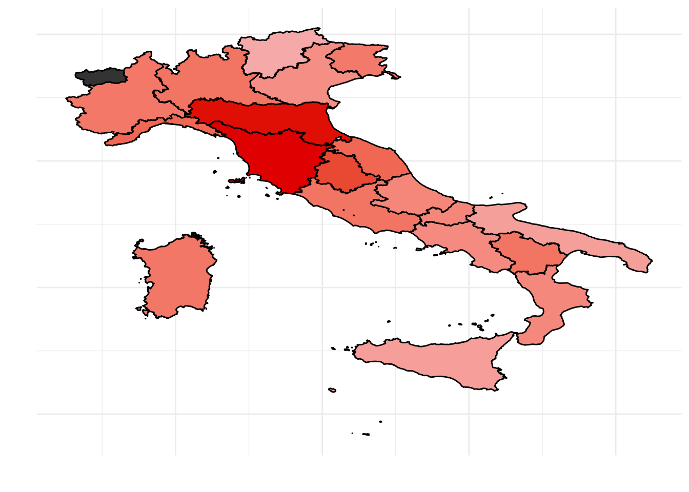

Elections report
In one of my lessons I was to give students an overview on how to compile reports with rmarkdown. As Italians, when it gets to elections time, elections is the only thing we hear about in the news for months and decided to get them to work on the results of our elections.
This year’s data results is not ready for download yet. Hence I decided to work on the previous elections, that is the 2013 elections.
The report is completely parametrized, so it is not hard to make it work on the new year’s elections.
Data manipulation
The file is a semi-colon separated file so we import it with the read_delim() and then we easily manipulate the dataset:
elections <- read_delim("data/camera_2013_liste_italia.csv", delim = ";") %>%
mutate_all(funs(tolower(.))) and we make all letters lower cases:
names(elections) <- tolower(names(elections))So that the dataset looks like this:
| dataelezione | numlista | circoscrizione | provincia | comune | lista | votilista |
|---|---|---|---|---|---|---|
| 24/02/2013 | 1 | piemonte 1 | torino | aglie’ | sinistra ecologia liberta’ | 38 |
| 24/02/2013 | 2 | piemonte 1 | torino | aglie’ | centro democratico | 0 |
| 24/02/2013 | 3 | piemonte 1 | torino | aglie’ | partito democratico | 368 |
| 24/02/2013 | 4 | piemonte 1 | torino | aglie’ | rivoluzione civile | 23 |
| 24/02/2013 | 5 | piemonte 1 | torino | aglie’ | mir - moderati in rivoluzione | 1 |
| 24/02/2013 | 6 | piemonte 1 | torino | aglie’ | fratelli d’italia | 34 |
with info on 152621 sections.
Here we have got some data manipulation to do in order to have data which is easier to treat.
The column
circoscrizione, contains the name of the section in which votes were counted. Each section is called region_name and a number. We want to get rid of such number and just keep the info on the region, so that we can aggregate by region and then come out with region level information.We want to aggragate data at region level and calculate the percentage of votes received by each party
elections <- elections %>%
separate(circoscrizione, c("region", "other"), " ") %>%
group_by(region, lista) %>%
mutate(votilista = as.numeric(votilista)) %>%
summarise(votes = sum(votilista)) %>%
mutate(perc_votes = round(votes/sum(votes)*100, 2))So that the final dataset looks as follows:
| region | lista | votes | perc_votes |
|---|---|---|---|
| abruzzo | casapound italia | 2580 | 0.33 |
| abruzzo | centro democratico | 4492 | 0.58 |
| abruzzo | fare per fermare il declino | 4452 | 0.57 |
| abruzzo | forza nuova | 2964 | 0.38 |
| abruzzo | fratelli d’italia | 27693 | 3.56 |
| abruzzo | futuro e liberta’ | 5703 | 0.73 |
How many votes for the Democratic Party?
Let us now focus on one party. For example we may focus on the Democratic Party that “won” the 2013 elections.
First let us see what was the percentage of votes that it got in each region
tab1 <- elections %>%
filter(lista == "partito democratico") %>%
select(-lista) %>%
arrange(desc(perc_votes)) %>%
ungroup()
knitr::kable(tab1, col.names = c("Region", "Num. of votes", "Percentage of votes"), "html") %>%
kableExtra::kable_styling(full_width = F, font_size = 11, position = "center")| Region | Num. of votes | Percentage of votes |
|---|---|---|
| toscana | 831546 | 37.47 |
| emilia | 989660 | 37.04 |
| umbria | 168820 | 32.07 |
| liguria | 258763 | 27.69 |
| marche | 256968 | 27.69 |
| basilicata | 79696 | 25.70 |
| lazio | 850784 | 25.70 |
| lombardia | 1467161 | 25.60 |
| sardegna | 232895 | 25.16 |
| piemonte | 643835 | 25.10 |
| friuli-venezia | 178149 | 24.72 |
| molise | 42599 | 22.65 |
| abruzzo | 175968 | 22.61 |
| calabria | 209897 | 22.37 |
| campania | 652883 | 21.87 |
| veneto | 628384 | 21.34 |
| sicilia | 467410 | 18.61 |
| puglia | 407900 | 18.49 |
| trentino-alto | 101224 | 16.70 |
It seems that the democratic party is strong in central Italy, a bit less strong in the north of Italy, and definately not that appealing for the Southern Italy. For those that do not know the geography of Italy that well, let us join the information on the macro area near each region:
macro_area <- read_csv("data/macro-area")
tab1 <- left_join(tab1, macro_area, by = c("region"))
knitr::kable(tab1, col.names = c("Region", "Num. of votes", "Percentage of votes", "Macroarea"), "html") %>%
kableExtra::kable_styling(full_width = F, font_size = 11, position = "center")| Region | Num. of votes | Percentage of votes | Macroarea |
|---|---|---|---|
| toscana | 831546 | 37.47 | centro |
| emilia | 989660 | 37.04 | centro |
| umbria | 168820 | 32.07 | centro |
| liguria | 258763 | 27.69 | nord |
| marche | 256968 | 27.69 | centro |
| basilicata | 79696 | 25.70 | sud e isole |
| lazio | 850784 | 25.70 | centro |
| lombardia | 1467161 | 25.60 | nord |
| sardegna | 232895 | 25.16 | sud e isole |
| piemonte | 643835 | 25.10 | nord |
| friuli-venezia | 178149 | 24.72 | nord |
| molise | 42599 | 22.65 | sud e isole |
| abruzzo | 175968 | 22.61 | centro |
| calabria | 209897 | 22.37 | sud e isole |
| campania | 652883 | 21.87 | sud e isole |
| veneto | 628384 | 21.34 | nord |
| sicilia | 467410 | 18.61 | sud e isole |
| puglia | 407900 | 18.49 | sud e isole |
| trentino-alto | 101224 | 16.70 | nord |
Those that did not vote for the democratic party, did they vote for another left wing party?
In other words, I would like to find out whether there are regions in which both the percentage of votes to the democratic party and the percentage of votes to another left wing party are high. By doing so I should identify left-wing regions where both percentages are high and righ wing regions in which both percentage are low. Or regions in which one of the two party has attracted most votes leavig the other one with none.
At the time, the second biggest left wing party was called “ecologia sinistra liberta’”.
tab2 <- elections %>%
filter(lista == "sinistra ecologia liberta'") %>%
select(-lista) %>%
ungroup()
tab2 <- left_join(tab1, tab2, by = "region", suffix = c(".party1", ".party2"))
ggplot(data = tab2, aes(x = perc_votes.party1, y = perc_votes.party2)) +
geom_point(aes(col = macroarea), size = 1) +
labs(y = "Other left wing party", x = "Democratic Party") +
geom_label_repel(aes(label = region, col = macroarea), size = 3) +
theme_bw()
The plot returns what we expected. Central Italian regions such as Tuscany and Emilia-Romagna are well known for being left wing regions and in fact both the Democratic Party and the second largest left wing party got quite a good percentage of votes, while other regions, such as Veneto and Sicily, both left parties did not go well. Puglia at the time had a governor of “sinistra ecologia liberta’”, hence the left party votes in that region went mainly to it, disadvantaging the Democratic Party.
Mapping the votes
Last let us visualise on a map what is happening to the Italian peninsula. Using the development version of the package mapIT available on github, we plot the data. Notice that the mapIT function works with regions id, hence we better make sure that the regions are correctly identified.
Here is the percentage of votes obtained by the Democratic Party on the Italian map:
require(mapIT)
mapIT(perc_votes, region, data = data.frame(tab1),
graphPar = list(low = "#F5A9A9", high = "#DF0101",
show_guide = "Percentage of votes"))
Parametrize your report with Rmarkdown
All the above analysis is focused on the situation of the Italian left wing party in the 2013 elections. However one may be interested in a different year or different parties.
You can do that by paramtrising your report with Rmarkdown and here is how you can do that.
At the very beginning of your .Rmd file you find
---
title: "Title"
author: "Author"
date: ""
output:
pdf_document: default
html_document: defaultHere you may add your parameters:
---
title: "Title"
author: "Author"
date: ""
output:
pdf_document: default
html_document: default
params:
party1: partito democratico
party2: sinistra ecologia liberta'
year: 2013
---We have added 3 parameters: one indicating the year, that in this case may only be 2013 as data on other year’s elections is not included in the file, one indictaing the main party we analyse and the second one indicating the second party with whom we want to compare it.
Then, every tim you want to mention the democratic party, you should write r params$party1 and so on.
If you want to analyse a different party you just modify party1 or party2 and then compile your report by clicking on the Knit botton.
If you click on Knit with parameters a user interface, based on Shiny, will open up and you will be able to enter and modify the parameters. At this point it may be nice to provide a list of all the possible values for that parameter: so for instance you may add the main parties:
---
title: ""
author: ""
date: ""
output:
html_document: default
pdf_document: default
params:
year: 2013
party1:
choices:
- partito democratico
- sinistra ecologia liberta'
- popolo delle liberta'
- lega nord
- fratelli d'italia
- movimento 5 stelle beppegrillo.it
input: select
label: 'Main party:'
value: partito democratico
party2:
choices:
- partito democratico
- sinistra ecologia liberta'
- popolo delle liberta'
- lega nord
- fratelli d'italia
- movimento 5 stelle beppegrillo.it
input: select
label: 'Comparison party:'
value: sinistra ecologia liberta'
---This code will open up an interface in which you can enter the year, then you can choose the main party from a list of 6 possible values and then a comparison party from a drop down menu with 6 different alternatives.